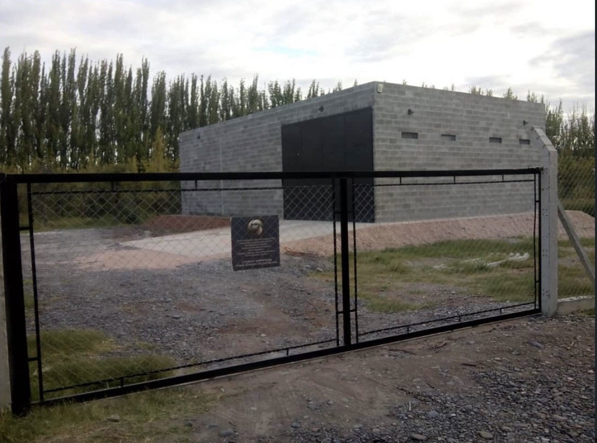
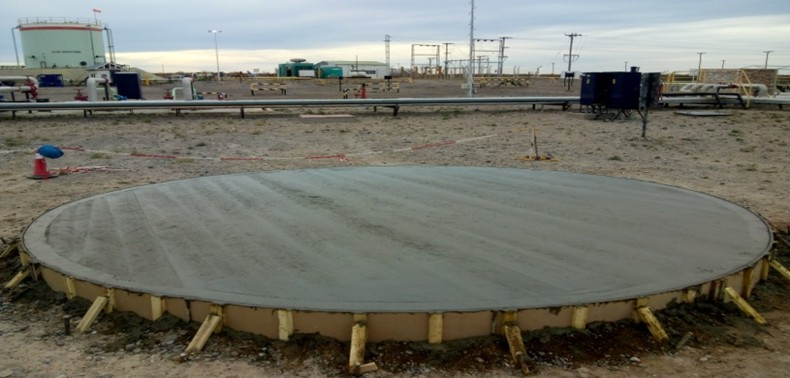

pileta
En este proyecto realizamos la construcción completa de una pileta de hormigón, desde la preparación
del
terreno hasta las terminaciones finales.
Se trabajó con materiales de alta calidad para
garantizar
durabilidad, seguridad y una excelente terminación estética.
El resultado fue un espacio moderno
y
funcional pensado para el disfrute de toda la familia.


galpon + cierre perimetral
Este proyecto incluyó la construcción de un galpón de uso múltiple junto con la instalación de un
cierre
perimetral metálico.
La obra fue diseñada para brindar seguridad, resistencia y aprovechamiento
eficiente del espacio.
Cada etapa se ejecutó siguiendo altos estándares de calidad y atención al
detalle.
platea
Platea circular de hormigón armado ejecutada con altos estándares de calidad, diseñada para
proporcionar una base sólida, estable y duradera para estructuras industriales. La superficie fue
nivelada
y terminada cuidadosamente para garantizar resistencia, seguridad y un óptimo desempeño a
largo plazo.
